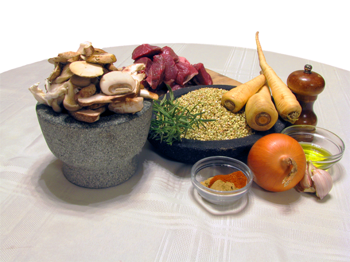

Imagining Neanderthal cuisine, we approached chef Josh Lewin, cofounder of Juliet restaurant in Somerville, MA, who has also concocted dishes inspired by Classical Rome. “What’s 50,000 years more?” said Lewin when invited to collaborate on cooking up Neanderthal meals. The following recipes were created in conversation with Lewin.
Shanidar Barley Salad
To start our culinary time-travel, an appetizer. This vegetarian-friendly dish was inspired by roughly 50,000-year-old plant remains unearthed from Shanidar Cave in what is now Iraq. Based on pollen in the sediments, Neanderthals in this mountainous region enjoyed a pleasant environment with walnut trees, oaks, and wild relatives of chicory and lettuce growing nearby. From the fossilized plaque of a Shanidar Neanderthal’s teeth, archaeologists extracted starch grains and phytoliths—microscopic mineral deposits that vary in shape by plant species. These botanical bits indicate that Neanderthal chomped date fruits, pea or chickpea-like legumes, and cooked grains resembling wild barley. (An older layer at the same site yielded a 70,000-year-old charred lump, thought to be a grain and legume pancake.)
Ingredients
From the original pantry:
1/2 cup dates, chopped
1/2 cup walnuts, chopped
1 cup chickpeas
1 cup pearl barley
3 cups water
Modern additions:
2 tablespoons olive oil
1 small onion
1 teaspoon cumin
1/4 teaspoon cinnamon
Salt and paper to taste
1 dollop yogurt to finish
Method
-
Bring barley, water, and salt to boil. Reduce heat and simmer for 25-30 minutes until tender.
-
In a medium pan, cook olive oil and onions for 5-7 minutes. Add walnuts, chickpeas, spices, and dates. Continue sautéing until the dates soften, about 1-2 minutes.
3.To serve, mix with barley and more olive oil. Allow to cool. Finish with a dollop of plain yogurt.

Iberian Roast Rabbit
This recipe derives from the culinary traces of Neanderthals who roamed the Iberian Peninsula roughly 120,000 years ago. During this period, frigid Ice Age conditions lulled, and Europe experienced a temperate climate similar to today’s. The ingredients featured in this dish—rabbit, pine nuts, and olives—were discovered at Bolomor Cave, a site perched in a narrow valley a few miles from Spain’s Mediterranean coast. Within the roughly 8-inch sediment layer deposited during this warm phase, researchers excavated bones from at least 80 rabbits. Burn marks and breaks indicate the arms were roasted, and the legs were broken down for marrow. Analyses of pollen from the same layer have revealed many edible species in proximity, including trees that produce wild pine nuts and olives. To transform these ingredients into a modern meal, Chef Josh’s team of professional cooks added olive oil, wine, herbs, and contemporary conveniences like a stovetop.
Ingredients
From the original pantry:
1 whole rabbit, cut into 6-8 pieces
¾ cup olives, roughly chopped
⅓ cup pine nuts, toasted
Modern additions:
¼ cup olive oil
1 medium shallot, finely minced
3 cloves garlic, finely chopped
1 tablespoon fresh rosemary, chopped
1 tablespoon fresh thyme leaves
2 bay leaves
½ cup dry white wine
2 cups vegetable broth (plus more as needed)
Salt and black pepper
Method
-
Warm olive oil in a heavy, oven-safe pot over medium heat. Add shallot and garlic, letting them soften slowly.
-
Combine thyme and rosemary in a food processor with a pinch of salt until a paste forms. The salt works as an abrasive to bruise the hard herbs and release moisture. For a more authentic experience, pull out that mortar and pestle or go outside and get a rock. Rub the paste all over the rabbit pieces. Add to the pot of garlic and shallots, along with bay leaves. Season with pepper to taste. Sauté gently until the meat is golden brown.
-
Pour in the white wine to lift the caramelized bits from the pan, then stir in olives and toasted pine nuts.
-
Add broth to nearly cover the meat. Cover and cook gently over low heat—or in a 325°F oven—for about one hour, until the meat yields easily to touch. If the liquid runs low, replenish it as needed, imagining the slow patience of a meal tended by fire.
-
Remove the lid and let the sauce thicken slightly. Taste for salt and acid balance. Serve warm with a drizzle of its juices.
-
Serve warm with a drizzle of its juices.
Spy Cave Sheep Stew
Facing the other extreme of climate, Neanderthals who inspired this dish lived roughly 45,000 years ago through severe cold in what is now Belgium. Studies of the region have shown wild mouflon sheep—the protein in this dish—were abundant through this period. At a site known as Spy Cave, Neanderthal dental tartar held DNA from these sheep and fungi as well as starches resembling water lily bulb and sorghum.
Imagining a moment of hygge against Ice Age cold, Chef Josh and his team created a stew of mushrooms, water lily, and lamb to be ladled over sorghum pilaf.

Photo by Bob Grant
Ingredients
From the original pantry:
1 lb lamb, cut into bite-size pieces
1 cup sorghum
1 cup wild mushrooms, roughly chopped
1-2 water lily bulbs, peeled and thinly sliced (or substitute mild root vegetable if unavailable—water lily is slightly starchy like parsnip or celery root but with a milder flavor)
Modern additions:
2 tablespoons olive oil (divided)
1 small onion, finely chopped
2 garlic cloves, minced
1 teaspoon ground cumin
½ teaspoon ground coriander
½ teaspoon smoked paprika
1 teaspoon rosemary (fresh or dried)
1 cup vegetable stock
Salt and black pepper, to taste
Method
-
Bring 2 cups of water to a boil, add the sorghum and a good pinch of salt, and cover. Simmer about 1 hour, until tender and nutty. Drain any remaining liquid and keep warm—this is the earthy base for the stew.
-
In a small pan, warm 1 tablespoon olive oil over medium heat. Sauté the sliced water lily bulbs (or substitute root vegetable) for 5–7 minutes, until golden and tender. Set aside.
-
In a large heavy pot, heat the remaining tablespoon of olive oil over medium-high heat. Season the lamb with salt, pepper, and rosemary. Brown on all sides, 5–7 minutes, until richly golden brown.
-
Add onion, garlic, and additional spices to the pot and cook until soft. Stir in mushrooms.
-
Add vegetable stock and the sautéed water lily bulbs. Lower the heat and simmer gently for 30 minutes, or until the lamb is tender and the broth has deepened. Taste and adjust seasoning.
-
To serve, spoon the stew generously over the warm sorghum. The grains absorb the broth’s warmth, an echo of the sustenance that carried Ice Age humans through long winter nights.

To learn more about the inspiration behind these recipes, read "Eat Like a Neanderthal."
Lead photo by Bob Grant
Källförteckning
- Originalartikel: https://nautil.us/the-taste-of-prehistory-1255416/